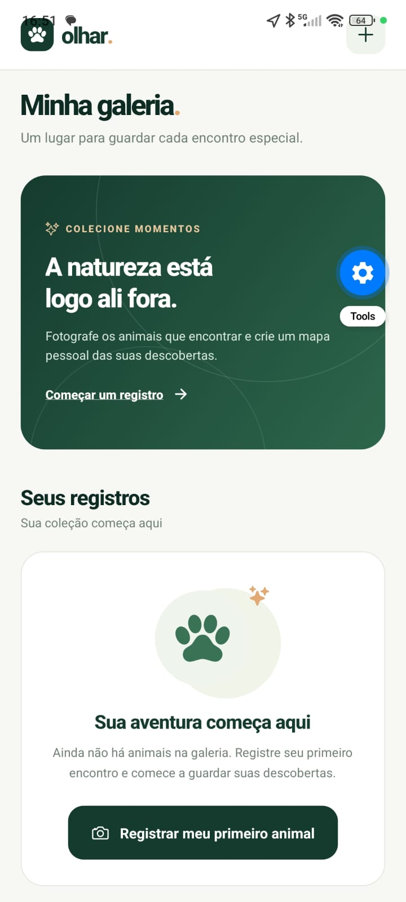
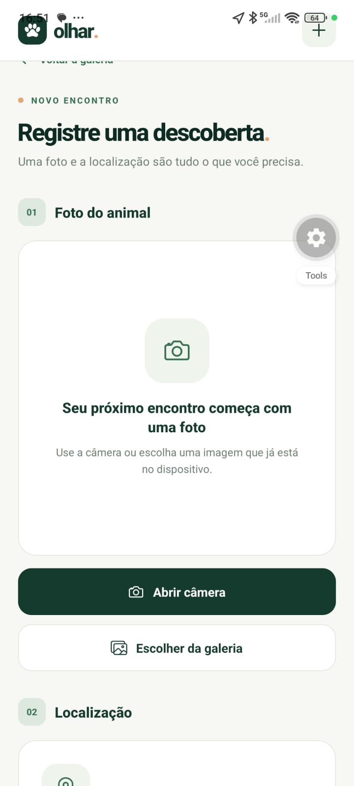
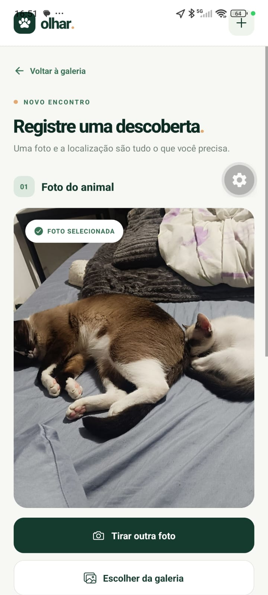
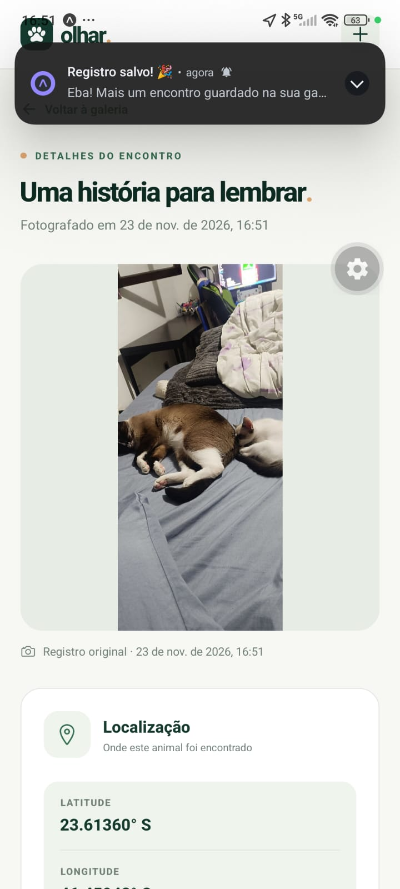
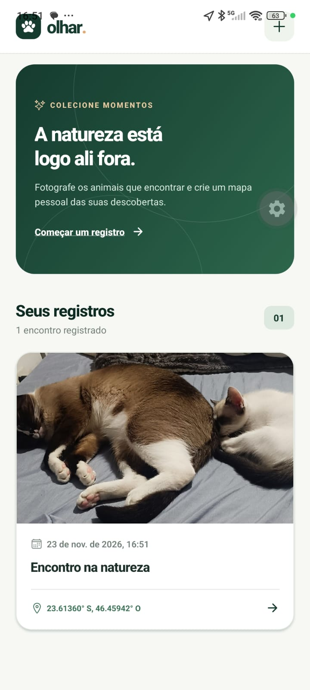

Registrar
Fotografar o animal e associar a imagem à localização e à data do encontro.
Uma foto e uma localização para dar visibilidade aos encontros com animais potencialmente perigosos.
Observar.
Registrar.
Compartilhar.
Fotografar o animal e associar a imagem à localização e à data do encontro.
A proposta é permitir que outras pessoas vejam a foto do animal e onde ele foi encontrado.
Ajudar a comunidade a conhecer os avistamentos e os possíveis riscos de uma região.
O protótipo demonstra o registro local. O compartilhamento entre usuários depende de uma futura integração com servidor.
O app envia usuário e senha para a API e restaura os dados da sessão ao ser aberto novamente.
Uma requisição POST envia as credenciais. A resposta identifica o usuário autenticado.
Diante do erro de CORS relatado no navegador, usamos o modo de demonstração para apresentar os recursos do app.
A tela inicial reúne os registros feitos no aplicativo.
Antes do primeiro uso, a tela convida a registrar um animal.
Toque em “Registrar meu primeiro animal” ou no botão +.

O usuário inicia um registro com uma imagem do animal.
“Abrir câmera” permite tirar uma foto naquele momento.
Também é possível escolher uma imagem já existente no aparelho.
O app solicita acesso à localização para associar as coordenadas ao encontro.

A foto selecionada aparece antes de salvar o registro.
O usuário confere se a imagem representa o encontro.
Se necessário, pode tirar outra foto ou escolher uma nova imagem.

Após salvar, o app apresenta os detalhes e uma notificação local.
A foto fica associada à latitude, à longitude e à data.
“Registro salvo!” demonstra a integração com as notificações do celular.

O registro salvo passa a fazer parte da galeria do aplicativo.
O cartão mostra a foto, a data e as coordenadas.
Abra o encontro para consultar seus dados. A versão atual também permite apagar a foto com confirmação.

O banco olhar-selvagem.db guarda ID, caminho da foto, latitude, longitude e data. Ao reabrir, o app consulta a tabela animals.
A foto é copiada para a pasta interna animals/. O SQLite guarda o caminho desse arquivo, e não a imagem em si.
No celular: SQLite. Na versão web: IndexedDB. Os registros são locais e não são enviados automaticamente a outros usuários.
A notificação local confirma a ação e demonstra o uso do recurso no celular.
Eba! Mais um encontro guardado na sua galeria.
O app primeiro grava o registro e, em seguida, solicita a notificação com som padrão.
O aviso e o som dependem da autorização e das configurações do celular. A foto permanece salva se a notificação falhar.
Nesta demonstração, o aviso é disparado pelo próprio aparelho. Alertas sobre avistamentos de outras pessoas ficam como evolução do projeto.
import { Camera } from 'expo-camera';
let permission = await Camera.getCameraPermissionsAsync();
if (!permission.granted && permission.canAskAgain) {
permission = await Camera.requestCameraPermissionsAsync();
}
if (!permission.granted) return;Primeiro consultamos a permissão. Se ainda não foi concedida e o sistema permite perguntar, mostramos a solicitação. A câmera só pode ser usada quando o acesso é autorizado.
Se o acesso estiver bloqueado, o app orienta a abertura das configurações. Base: StartupPermissions.native.tsx.
import * as Notifications from 'expo-notifications';
import { prepareNotifications } from '@/services/notifications';
await prepareNotifications();
let permission = await Notifications.getPermissionsAsync();
if (!permission.granted && permission.canAskAgain) {
permission = await Notifications.requestPermissionsAsync();
}Preparamos o canal no Android, consultamos a autorização e solicitamos acesso quando necessário. Depois de salvar um encontro, o app usa essa permissão para exibir a notificação local.
A preparação usa o canal padrão se a criação do canal personalizado falhar no Expo Go. Base: notifications.native.ts e StartupPermissions.native.tsx.